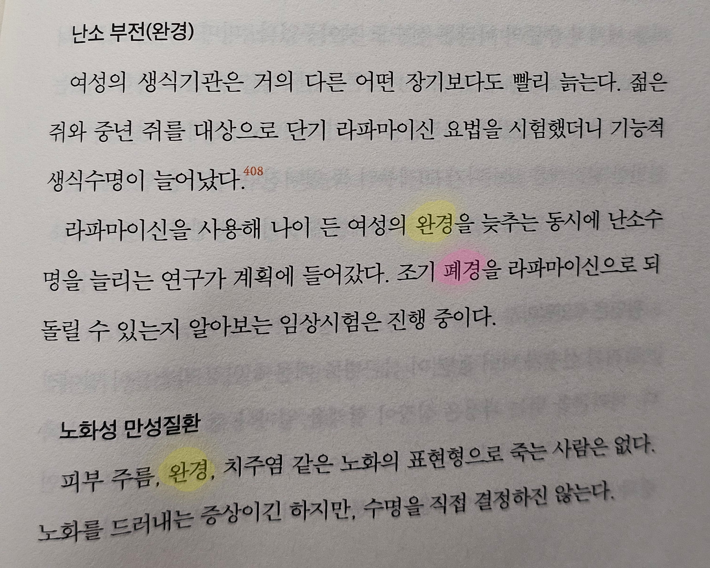

거 ㅋㅋㅋ

거 ㅋㅋㅋ
비유보소 씨발 찰떡이네
검찰청은 완지된 거네? ㅋㅋㅋ
헉 조기 완경
어휴 시발 완급새끼
평평완평폐평궁
호흡을 위한 장기를 이제 폐가 아니라 완이라고 부릅니다
폐질환 - 완질환
폐암 - 완암
肺, 閉
선 잘타누ㅋㅋ
완급작가군
완폐ㅖ폐폐폐폐ㅖㅖㅖ폐폐완폐 완폐ㅖㅖㅖ폐완 완폐ㅖㅖ 완
저자가 완급이네
근데 완경은 좀 생각보다 호러틱 하지 않냐?
여성으로서의 삶이 완성 되었다 완결났다 하는거 아님? 폐경이었으면 문이 닫혀서 생리가 끝났다인데 완경이었으면 완성이 된거잖아
완성이 되었으면 그 이후가 없는거고 완경 이후의 삶은 이제 여성이 아닌 존재로서 살아간다는건데
여성운동하는 여자들은 여성인것 자체가 천형이라고 생각하는건지 생각보다 끔찍한듯
ㄹㅇ;;
근데 여성운동 하는 애들이 숏컷하고 남자처럼 하고 다니는거 보면
그냥 베이스는 남성에 대한 동경이고 여성으로 태어난 자신에 대한 분노가 아닐까 싶음
ㄹㅇ 차라리 '종경' ㅇㅈㄹ 했으면 말이라도 되지
종경 백제검 ㄷㄷ
자기 인생의 모든 불행이 자기 가 살아온 결과가 아니라 자기가 바꿀수도 어쩔수도 없는 성별 탓이어야함
그리고 원래 용어가 완경이었으면 폐경으로 바꾸자고 했을 족속임
완경 폐경 싸우지말고 순우리말로 그냥 다시만들자 그런거 잘하잖아
피흘림끝
이거 완전 옵세션 아니냐
폐 완 얼
폐경, 완경 번갈아서 쓴 거 아님?ㅋㅋㅋㅋㅋㅋㅋㅋ
폐완 항우
폐 완 색
뭘 좋아할지 몰라서 전부 가져왔어요
입구를 완쇄합니다
유아차 유모차는 그래 시대에 안맞는다고 쳐
폐경 완경은 볼때마다 웃김
완소공포증
완경이 의미가 맞냐? 빡대가리야
패완경으로 하자
무언가 '완성' 되었을때만 '완'을 쓰지
월경이 뭘 쳐 만들었다고 '완경' ㅇㅈㄹ싸고있냐
닫을 폐는 그냥 닫는다, 끝났다는 중립적인 뜻인데 왜 폐경으로 지랄을 하는지 이해가 안가네.
폐막식, 밀폐용기 <- 이런 단어 보면 뭐 부정적인 생각 들음? 비하적으로 들림?
어허 완막식, 밀완용기
뻑경
우리 매장 완업합니다~